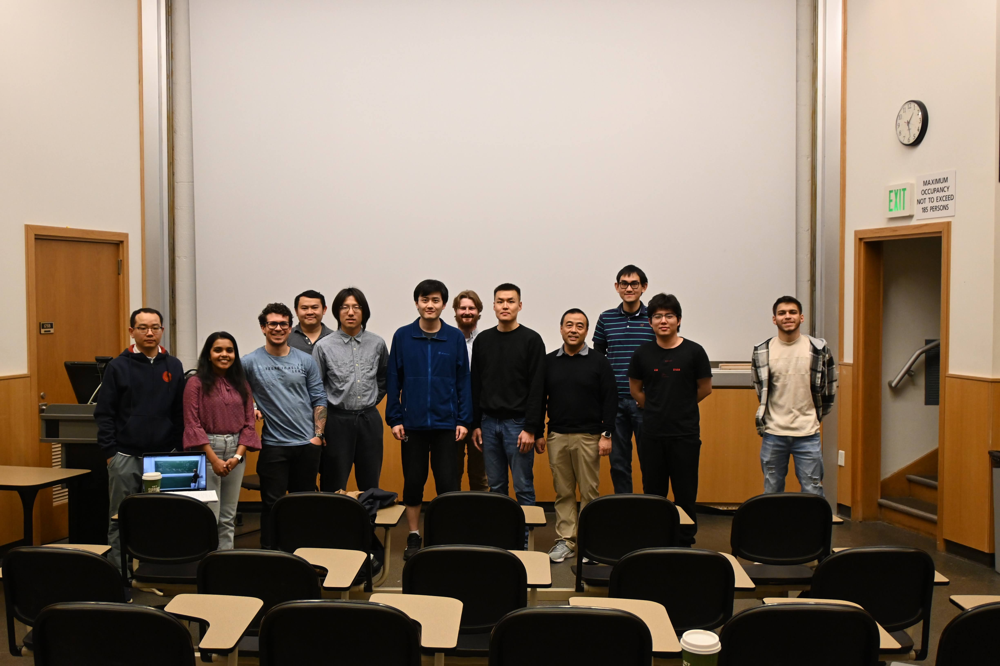

Purdue SIAM Student Conference

Time: 1:30 – 2:20 PM
Topic: Interpretable, Robust, and Trustworthy AI Systems
This talk introduces several innovative technologies designed to enable the development of interpretable, robust, and trustworthy AI systems. In particular, it showcases AI frameworks that can be reliably deployed for real-time prediction of complex dynamical systems, with applications aimed at enhancing their stability and efficiency. Case studies include COVID-19 pandemic forecasting and personalized prediction in Alzheimer's disease.
About the Speaker: Prof. Guang Lin is the Associate Dean for Research and Innovation and the Director of Data Science Consulting Service. He is the Chair of the Initiative for Data Science and Engineering Applications at the College of Engineering and a Full Professor in the School of Mechanical Engineering and Department of Mathematics at Purdue University. His honors include the NSF CAREER Award, Mid-Career Sigma Xi Award, University Faculty Scholar, and Mathematical Biosciences Institute Early Career Award.
Analyzes l_1 regularized linear regression under adversarially corrupted training data. Proves deterministic adversarial attacks can be handled with a few samples for support recovery, and studies stochastic adversary models revealing counter-intuitive effects on sample complexity.
Explores how relational information embedded in graphs can be integrated with foundation models, with a focus on privacy challenges posed by learning from sensitive relational data — particularly when augmenting and fine-tuning pretrained models.
Studies the shallow Ritz method for one-dimensional elliptic problems and shows the method dramatically improves the order of approximation for non-smooth problems. A damped block Newton method achieves optimal or nearly optimal order with O(n) cost per iteration.
Introduces ReVAR (Re-Whitened Vector Auto-Regression), an algorithm for data-driven aero-optic phase screen generation that trains on experimental time-series data and synthesizes data matching the statistics of the experimental input — efficiently and with high quality.
Presents GAS, which extends 2D+time superpixels to efficiently tessellate a 3D volume and dynamically adjusts complexity based on scene content — balancing computational efficiency and high-quality scene understanding.
See invited speaker section above for details.
Applies Approximate Approximate Bayesian Computation (AABC) to an agent-based model of zebrafish skin patterns and a vertex-based model of meristem development in fern gametophytes, demonstrating AABC's utility for complex biological systems.
Examines partially second-order methods for min-max optimization and explores the higher-order smoothness regime by extending higher-order methods to structured non-monotone and higher-order smooth problems.